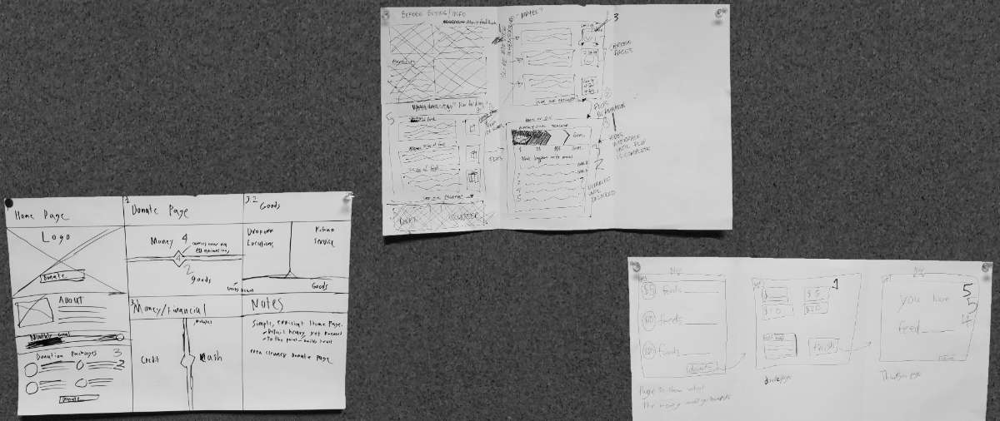
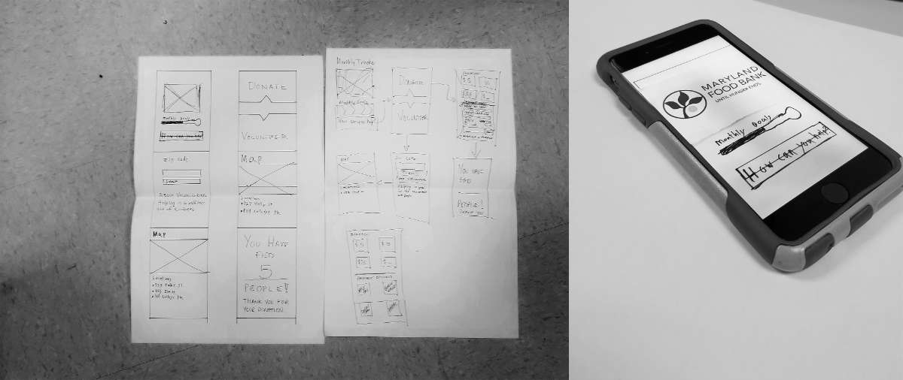

Design Sprint

About Design Sprints
A design sprint is a new concept in the design world used to rapily create a prototype ready to be put through user testing. It was first developed at GV, who describes it as a "greatest hits" of business strategy, innovation, behavior science, design thinking, and more.
A sprint is a five-day process in which each work day is dedicated to a new step in the process. The idea is that a problem is identified, and different solutions are rapidly developed.
My Web Design 2 professor recently had my class go through this process over the course of about eight hours. The following is a documentation of this experience.
Understand

To begin, Professor Erik Dunham gave us a problem to solve. The scenario was that the Maryland Food Bank had hired us to create an app that would increase their online donations. We started by doing short interviews with each other, and writing down the given answers on post-it notes. We then arranged their answers into categories in an attempt to identify different issues somebody may have with donating online.
Diverge

Taking the feedback we had recieved from the class, we went our seperate ways to sketch out different ideas of how to solve the issues. I focused on trying to solve the user trust issue we saw on the whiteboard - that a lot of users didn't trust their information for online donations. We all ran through a Crazy Eights excersize, and
Decide
For this stage, I grouped up with others in the class - Anna Copper, and Alexander Garcia, to compare ideas. Our goal at this stage was to choose ideas, and further flesh them out. We did this by voting on our favorite ideas from our three concepts.
Prototype
Based on the feedback we had recieved from each other, we began to work together to create a final concept.
We used Marvel's prototyping app on our phones to do this - it allows you to add a layer of interactivity to still images, such as sketches. Through this tool, we were able to build a working prototype of our concept.
Validate

My group decided that I would be running the user test session, while Alexander took notes. Our professor used a random name picker to choose who we would be interviewing.
During the test session, we were able to see the strengths and flaws in our design very clearly. While our plan was to help solve the issues that were brought up with user trust by keeping everything clean and approachable, our end-user commented that she felt like she wasn't being given enough information, and wanted to know the explicit details that we had kept simple.
This was also good experience in the user testing process itself. Our app did not have a "back" button in the prototype, simply because we felt it wouldn't be neccecary for our test. However, that was the first thing our end-user searched for, and it's absense became a distraction and gave her a negative view of our app.
While our app was not perfect, we were able to see these problems. If we were actually building this app, we could begin to solve them with a revision.
Conclusion
This was a great experience in working with a team, as well as rapidly building a concept from the ground up. I'm very grateful to my professor for bringing this oppertunity to us. One of the reasons I signed up for my college's Web Design 2 class was that I was told we'd be working in groups, and having a group project on day one was fantastic.
I'd also like to thank both Anna Cooper and Alexander Garcia. It was great working with you both.